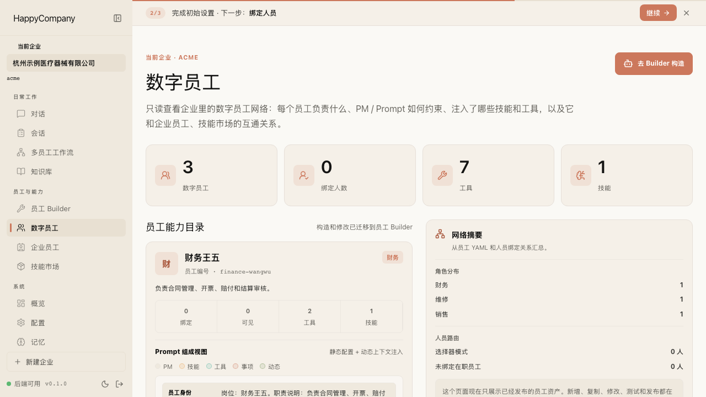
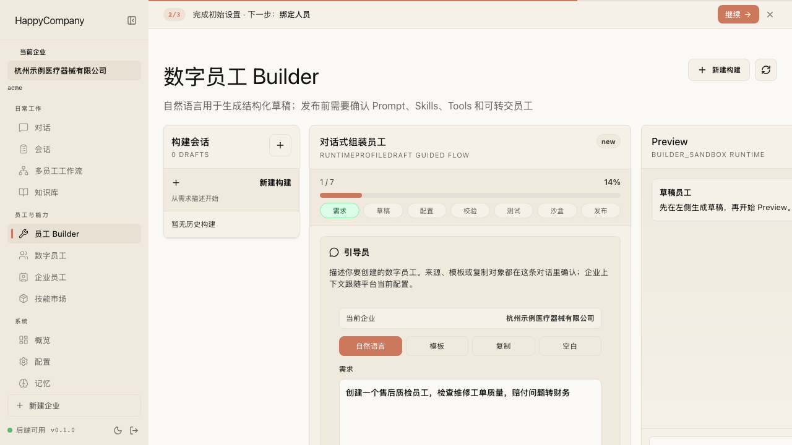
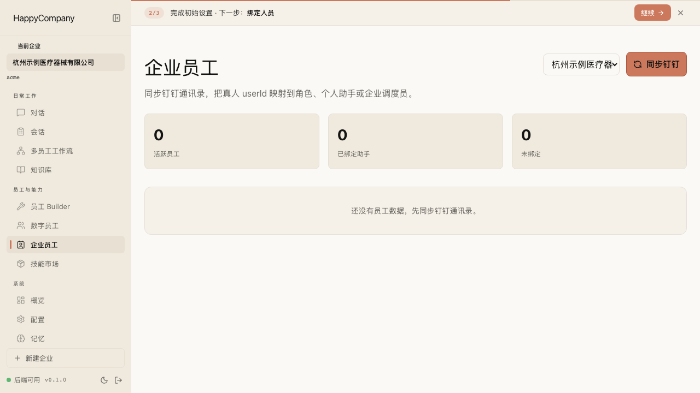
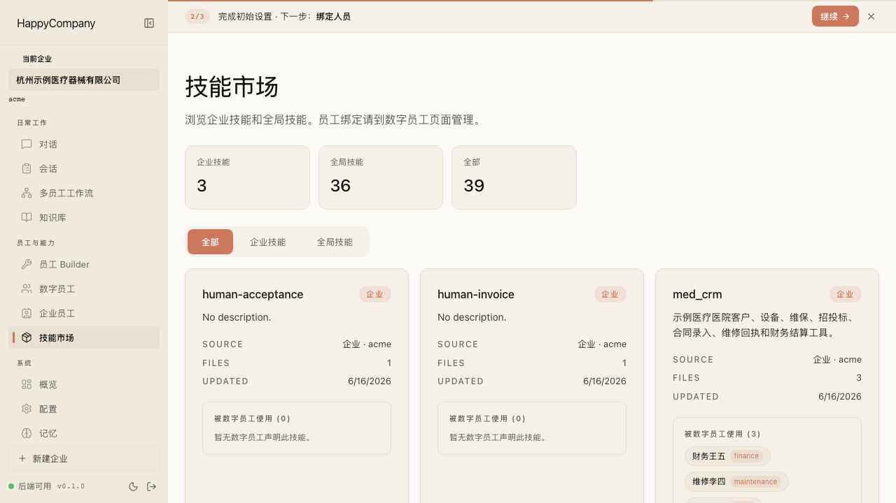
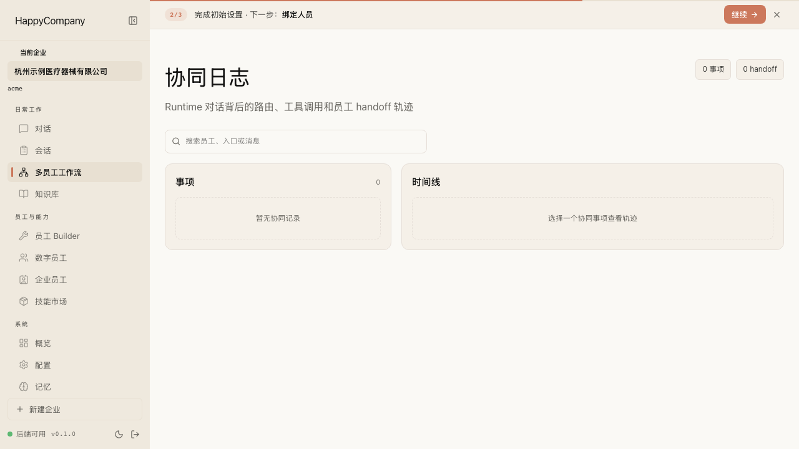
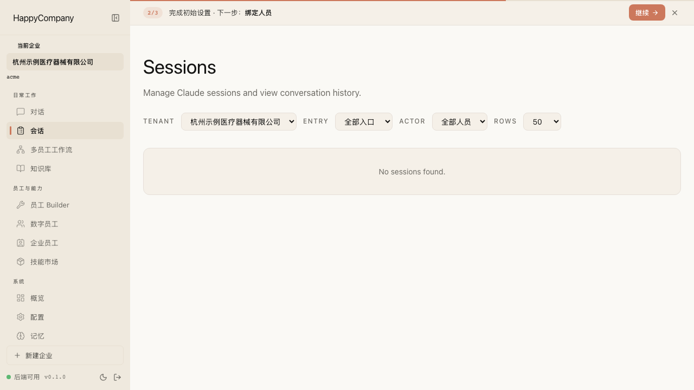
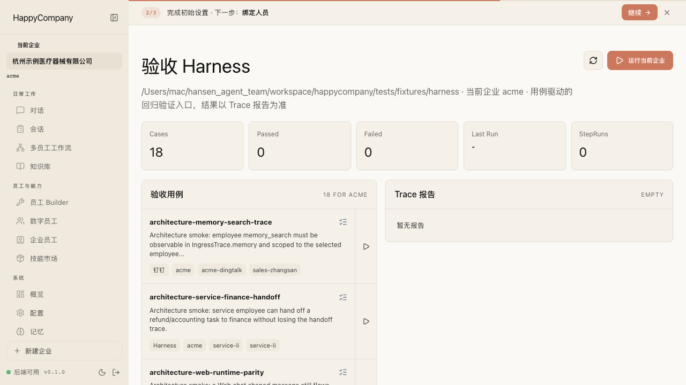
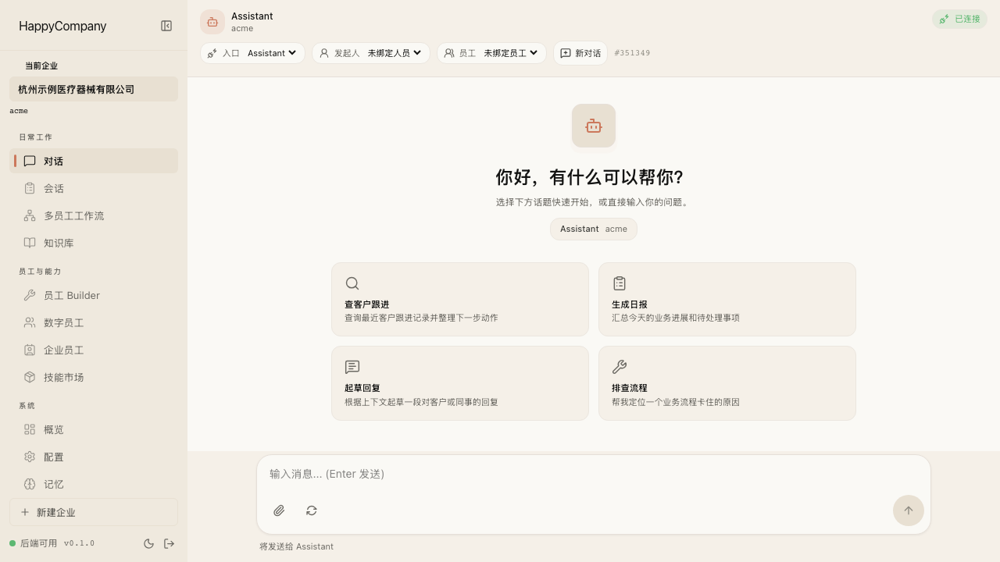
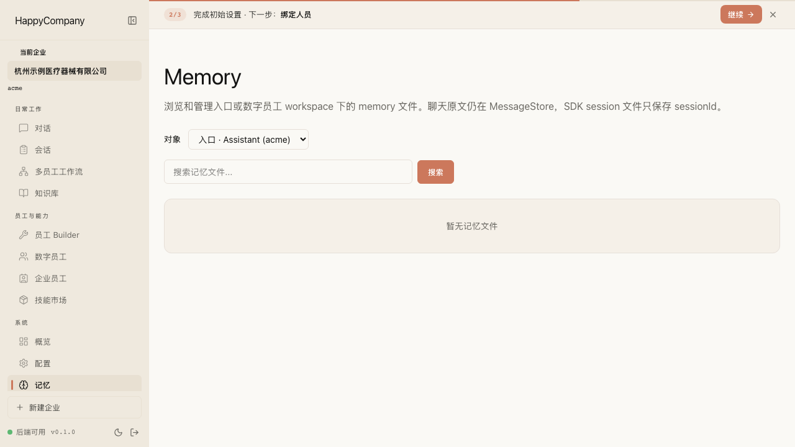
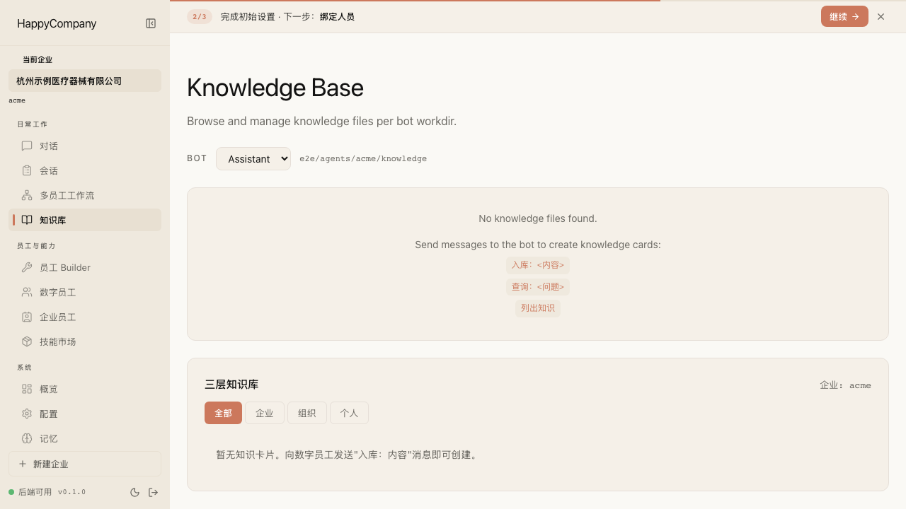

Employee Activation
从员工创建、发布、绑定到 Chat 使用，证明一个数字员工能进入真实业务链路。
- Mainline: `story-v2-product-journey`, `story-q-chat-websocket`, `story-h-sessions`
- Probe: `probe-enterprise-people-binding`
按产品故事整理当前 Web E2E 覆盖。当前扫描到 22 个故事/路线，59 条测试。运行结果请结合最新 Playwright 输出确认。
从员工创建、发布、绑定到 Chat 使用，证明一个数字员工能进入真实业务链路。
完成模型配置、企业创建、员工网络准备和人员绑定引导。
配置 Web、钉钉、飞书入口，并确认入口能进入运行态。
用户发起请求后，平台能路由到合适数字员工，必要时转交，并展示可理解的过程。
聊天或工作流运行后，能通过 Sessions 和 Orchestration 追踪过程。
管理知识库和记忆文件，支持搜索、查看、编辑、删除。
用 Harness 对员工能力或工作流进行可重复验收。
切换企业时，入口、员工、知识、会话数据不会串租户。
证明 HappyCompany 能处理示例医疗真实长链路业务：招标中标、合同录入、维保定时、派单、现场维修、回执和财务闭环。











| Type | Directory | Tests |
|---|---|---|
| Mainline | story-bootstrap | 9 |
| Mainline | story-config-page | 7 |
| Mainline | story-h-sessions | 4 |
| Mainline | story-q-chat-websocket | 8 |
| Mainline | story-v2-agent-builder-doc | 1 |
| Mainline | story-v2-harness | 1 |
| Mainline | story-v2-product-journey | 12 |
| Journey | journey-acme-ultimate-acceptance | 1 |
| Journey | journey-chat-collaboration-handoff | 1 |
| Journey | journey-console-overview | 1 |
| Journey | journey-employee-activation | 1 |
| Journey | journey-harness-acceptance | 1 |
| Journey | journey-multi-tenant-isolation | 1 |
| Journey | journey-session-runtime-review | 1 |
| Probe | probe-config-editing | 1 |
| Probe | probe-enterprise-people-binding | 1 |
| Probe | probe-knowledge-interactions | 1 |
| Probe | probe-layout-shell | 2 |
| Probe | probe-long-chat-session | 1 |
| Probe | probe-memory-editor | 1 |
| Probe | probe-orchestration-interactions | 1 |
| Probe | probe-skill-marketplace-package | 2 |
Partial · Add report Journey when onboarding changes
Partial · Add Journey when channel onboarding changes
Probe only · Promote to Journey if product priority rises
Probe only · Add Journey only if marketplace becomes a release focus